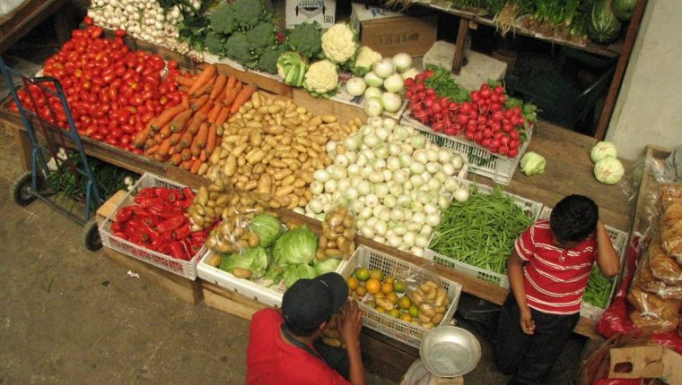

De esta manera, las industrias con mayor relevancia en Quetzaltenango por sus altos niveles de producción y comercialización son la industria textil y la industria licorera. ... Entre de los productos cultivados que destacan en Quetzaltenango están: café, fruta, hule, maíz, arroz, ajonjolí y palma africana.
